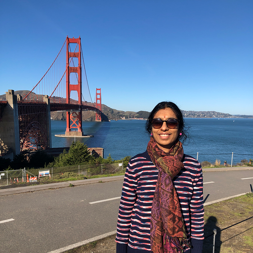
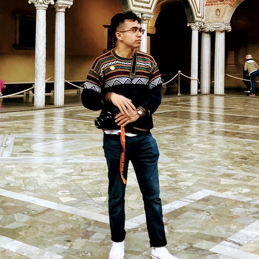
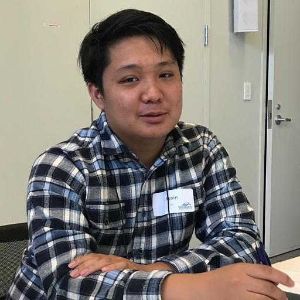

Bhavani Rajan
Post Here Project Lead, Bhavani is a Data Scientist by trade and a plant mom. Her favorite subreddit is r/permaculture.
Mario Sanchez
Mario is a full stack react developer hailing from Los Angeles, CA. His favorite subreddits are r/videogames and r/coding.
Matthew Malloy
Matthew is a full stack react developer and current LA native in the Arts District. He loves nothing more than deploying react apps from his r/battlestation.

Genard Tejano
Ivan managed database access and authentication using the Node.js backend for the Post Here project. He loves trading synthesizer rigs on r/mechmarket.
Zack Murray
Zack is the Data Scientist who turned our Reddit data into a predictive model. Being a professional frisbee fanatic, his favorite subreddit is r/discgolf.
Justin Lohner
Justin has built out the dually-comaptible Java backend to parse our predictive modelling into actionable data for our users. An Orem, UT socialite, Justin likes defying the odds with the folks at r/whatcouldgowrong.
Tyler Etheridge
Tyler was the brains behind database management. Currently based in Connecticut, he oversaw API access with a style fit for r/mechanicalkeyboards.

Kevin Liu
Kevin is a Californian who managed our API routing and internal database construction. Since starting this project, Kevin has discovered a newfound affinity for r/tekken67.
Alex Goncalves
This is Alex's premiere work as UI designer. Presently quarantining in his parents' basement in State College, PA, Alex spends his spare time lurking on r/comedycemetery.